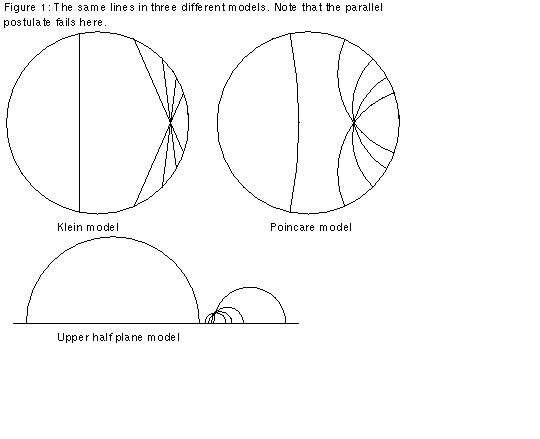
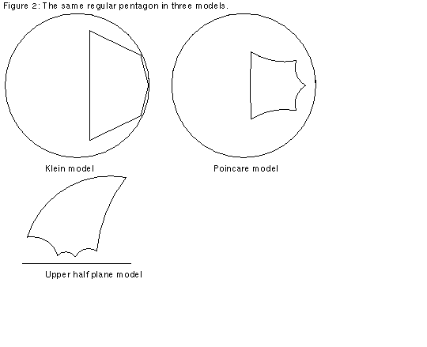
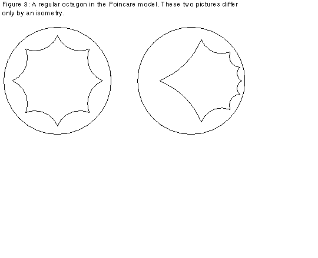
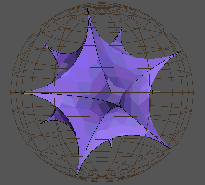

![[HOME]](model_files/home.gif) The Geometry Center Home Page
The Geometry Center Home Page
Article: 134 of geometry.college Xref: news3.cis.umn.edu geometry.forum:156 geometry.college:134 Newsgroups: geometry.forum,geometry.college From: sander@geom.umn.edu (Evelyn Sander) Subject: Re: Hyperbolic.m: hyperbolic geometry software Organization: The Geometry Center, University of Minnesota Date: Fri, 11 Feb 1994 00:30:29 GMT Lines: 85
The following is a description of some of the models for the hyperbolic plane. In order to understand the descriptions, refer to the figures. They may seem a bit strange. However, a result due to Hilbert says that it is impossible to smoothly embed the hyperbolic plane in Euclidean three-space using the usual Euclidean geometry. (Technical note: In fact it is possible to have a C^1 embedding into R^3, according to a 1955 construction of Nicolaas Kuiper, but according to William Thurston, the result would be "incredibly unwieldy, and pretty much useless in the study of the surface's intrinsic geometry."[William Thurston, "Three Dimensional Geometry and Topology," Geometry Center Preprint, 1991, p.43.]) Since there is no such smooth embedding, any model of the hyperbolic plane has to use a different geometry. In other words, we must redefine words like point, line, distance, and angle in order to have a surface in which the parallel postulate fails, but which still satisfies Euclid's postulates 1-4 (stated in the previous article). Here are brief descriptions of three models:
Klein Model
In the Klein model of the hyperbolic plane, the "plane" is the unit disk; in other words, the interior of the Euclidean unit circle. We call Euclidean points the "points" for our model. We call the portions of Euclidean lines which intersect the disk "lines." See the Klein model in Figure 1. From the above, the model seems similar to Euclidean space. However, there are differences; since we insist that postulate 2 holds, which says that we can make every line infinitely long, we must have a new description of "distance." We define the "distance" between two points as follows: If (x,y) and (u,v) are the Euclidean coordinates of two points, then the hyperbolic "distance" between them in the Klein model is arccosh{(1-xu-yv)/sqrt[(1-x^2-y^2)(1-u^2-v^2)]}. Thus postulate 2 holds in this model, since the "distance" from any point in the disk to the unit circle is infinite. Also, the way we define "angles" in the model is not the same as Euclidean definition of angles. To see this, look at the regular pentagon in the Klein model in Figure 2. As you can see, although all five of the "angles" are the same, the Euclidean angles are not the same.

Upper Half Plane Model
The upper half plane model takes the Euclidean upper half plane as the "plane." Now the "lines" are portions of circles with their center on the boundary, as shown in Figure 1. The "distance" between two points with Euclidean coordinates (x,y) and (u,v) is arccosh{1+[(x-u)^2+(y-v)^2]/2yv}. Thus the "distance" from any point to the x-axis is infinite, ensuring that postulate 2 holds in this model. Unlike the Klein model, "angles" are the same as Euclidean angles. Remember, you have to draw tangents to the "lines" to calculate the Euclidean angles. See Figures 1 and 2.

Poincare Model
In the Poincare model, the "plane" is the unit disk, and "points" are Euclidean points. "Lines" are portions of circles intersecting the disk and meeting the boundary at right angles. The "distance" between two points with coordinates z and w in the complex plane is: 2 arctanh{|(z-w)/(1-wz*)|}, where z* is the complex conjugate of z. Thus as in the Klein model, the "distance" to the boundary of the disk is infinite, and postulate 2 holds. Like the upper half plane model, the "angles" for the model are the same as Euclidean angles. See Figures 1 and 2. Also compare the isometric octahedrons in Figure 3.

It is also possible to have higher dimensional hyperbolic spaces. There is a Poincare model for three-dimensional hyperbolic space. In this case the "space" is the unit sphere, "lines" are portions of circles intersecting the boundary of the unit sphere at right angles, and "planes" are portions of spheres which meet the unit sphere at right angles. Figure 4 shows a regular icosahedron in this Poincare model of 3D hyperbolic space:

The Geometry Center Home Page
Comments to:
webmaster@www.geom.uiuc.edu
Created: April 21 1994 ---
Last modified: Jun 18 1996